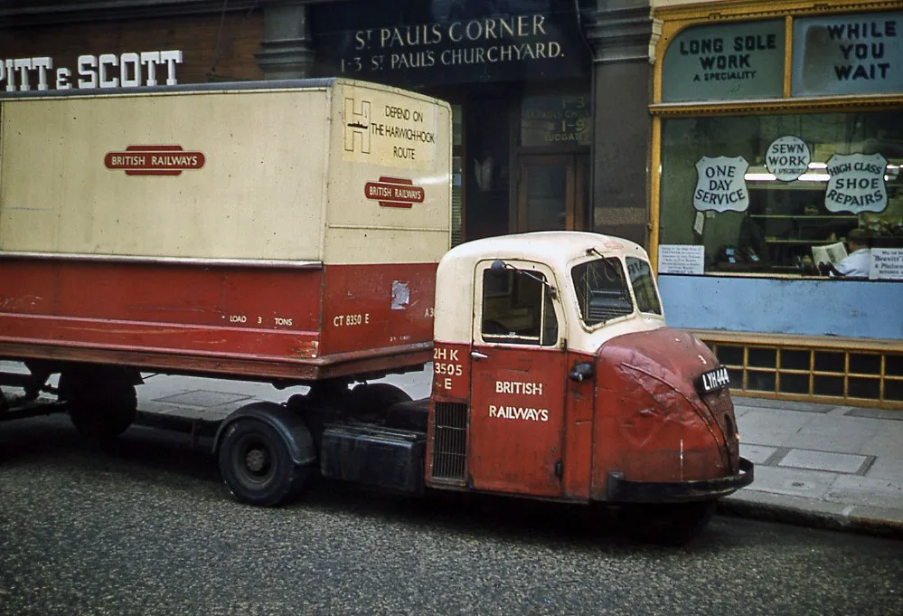

Un pequeño tractor con una sola rueda delantera y un semirremolque detrás parece una idea condenada a fallar. El Scammell Scarab, sin embargo, hizo durante años una tarea concreta: llevar mercancías desde estaciones ferroviarias británicas hasta su destino final. La pregunta interesante no es por qué no pudo funcionar, sino por qué dejó de tener sentido producirlo.
Esta historia surge de la pregunta planteada en el video sobre el camión de tres ruedas. Para responderla conviene separar tres cosas que suelen mezclarse: el Mechanical Horse original de los años treinta, el Scarab de posguerra y el Townsman que lo sucedió. También hay que distinguir un problema técnico real de los cambios en la logística que lo rodeaba.
El problema: del tren a la puerta del cliente
Antes de que la distribución por carretera dominara los envíos pequeños, el ferrocarril llevaba muchos paquetes y cargas hasta estaciones urbanas. Desde allí faltaba el último tramo. Ese reparto exigía entrar en patios ajustados, circular por calles estrechas y enganchar distintos remolques sin mantener un camión completo inmóvil durante la carga.
En los primeros años treinta, el concepto de Mechanical Horse llevó esa lógica a un tractor motorizado compacto. El ingeniero Oliver Danson North desarrolló para Scammell un sistema de acoplamiento automático que permitía al conductor recoger un remolque con una maniobra de retroceso. El Mechanical Horse Club explica su desarrollo y el East Anglia Transport Museum sitúa los primeros vehículos de tres ruedas en 1933. Las fuentes usan fechas ligeramente distintas para la introducción y el anuncio comercial; lo seguro es que la idea precede al Scarab por más de una década.
El Scarab no fue el primer Mechanical Horse
Después de la Segunda Guerra Mundial, Scammell rediseñó el vehículo. El Scarab apareció en 1948 con una cabina de acero redondeada y el motor colocado más bajo que en su antecesor. El club histórico documenta versiones de tres y seis toneladas con motor naftero de 2.090 cm³ y, posteriormente, opciones diésel Perkins. Por eso no corresponde describirlo como una sola configuración mecánica durante toda su vida.
El Scarab se construyó hasta 1967, según el registro del club. El museo de East Anglia sitúa el estilo Scarab entre 1948 y 1964 para su ejemplar y describe una unidad de 1952 que trabajó con la RAF hasta 1968. Esas fechas hablan de cosas diferentes: presentación, variantes, fabricación y retiro de un vehículo individual. El Townsman fue un sucesor posterior, no otro nombre del mismo camión.
Su silueta, con la rueda directriz debajo del frente de la cabina, parece extraña frente a un tractor actual. Pero estaba calculada para una misión de maniobra y reparto, no para reemplazar a cualquier camión pesado en una ruta larga. Juzgarlo con esa expectativa equivale a pedirle a una herramienta de patio que haga el trabajo de un vehículo de larga distancia.
La verdadera innovación estaba detrás de la cabina
El enganche era tanto o más importante que la tercera rueda. El conductor retrocedía hacia un remolque estacionado: unas guías llevaban el conjunto a la posición correcta, el mecanismo elevaba la parte delantera del remolque y sus patas de apoyo se plegaban. El Mechanical Horse Club describe cómo el acople integraba también conexiones de freno e iluminación. Así, el tractor podía soltar una carga y tomar otra sin que alguien tuviera que hacer todo el trabajo manual bajo el remolque.
Para una estación con varios remolques, eso ahorraba tiempo de espera del tractor: uno podía cargarse mientras otro salía a repartir. No significa que el conductor no debiera verificar el enganche y las conexiones antes de circular. Significa que el diseño concentraba en una maniobra una serie de pasos que, en un conjunto convencional de la época, resultaban más laboriosos.

¿Para qué servía la rueda única delantera?
La disposición dejaba que la parte delantera girara muy cerrado. En un patio ferroviario, un depósito o una calle con poco lugar, poder ubicar el remolque sin varias maniobras era una ventaja concreta. La fotografía histórica muestra por qué importaba: el Scarab no vivía aislado en una exhibición; formaba parte de una red de reparto urbano.
Una rueda delantera no convierte por sí sola a cualquier vehículo en inseguro, del mismo modo que cuatro ruedas no garantizan estabilidad. Carga, distribución de masas, velocidad y operación prevista importan. Las fuentes históricas atribuyen la desaparición de esta familia a cambios de trabajo y reglamentación; no documentan una retirada general porque el Scarab volcara sistemáticamente. Presentar la forma como prueba de un fallo sería una conclusión sin respaldo.
Entonces, ¿qué cambió?
Primero cambió la carga. Hacia fines de los sesenta, British Rail reorganizó el transporte de mercancías: aumentó la importancia de cargas mayores y de métodos como el contenedor, mientras disminuía el papel de muchas pequeñas estaciones y repartos locales. El club de propietarios describe cómo los conjuntos más pesados y los tractores de cuatro ruedas comenzaron a encajar mejor con el nuevo esquema. El Archivo Nacional británico documenta el informe Beeching de 1963 y los cierres ferroviarios posteriores. Ese informe fue parte del contexto, no un interruptor que apagara por sí solo a todos los Scarab.
Después apareció una barrera normativa. Según la historia técnica del Mechanical Horse Club, la regulación británica de 1968 exigió frenos en todas las ruedas del tractor. La rueda delantera de estos vehículos no estaba frenada. Adaptar el diseño resultaba costoso justo cuando el mercado se estaba moviendo hacia tractores más grandes y configuraciones diferentes. La combinación, no una sola falla milagrosa, cerró el caso comercial.
La paradoja es que una parte de la idea sobrevivió al vehículo: el acoplamiento automático continuó empleándose con tractores de cuatro ruedas durante los años setenta, de acuerdo con el club. Eso refuerza una lectura menos sensacionalista. Un producto puede desaparecer porque cambian sus condiciones de uso, mientras una de sus soluciones técnicas sigue siendo valiosa.
¿Fue un fracaso?
No en el sentido de un prototipo que jamás encontró clientes. La familia de tractores de tres ruedas de Scammell prestó servicio durante décadas y el museo de East Anglia habla de más de veinte mil unidades construidas a lo largo de unos treinta años. Esa cifra pertenece a la familia Mechanical Horse/Scarab, no debe atribuirse solamente al Scarab. Algunos ejemplares siguieron trabajando en patios y otros se preservaron, como el vehículo de la portada.
Su límite era ser muy bueno para una tarea específica. Cuando esa tarea perdió volumen y una nueva norma exigió cambios caros, mantener el mismo formato dejó de ser razonable. Tampoco hay evidencia en estas fuentes para decir que circuló masivamente en Argentina. La historia se refiere al Reino Unido y a su combinación particular de ferrocarril y reparto por carretera.
Qué puede aprender el transporte argentino
La enseñanza no es copiar un camión de tres ruedas, sino mirar el sistema completo. Una flota puede elegir una unidad muy eficiente para su recorrido actual y descubrir después que cambian la carga, las instalaciones, la normativa o la red de servicio. El valor de un vehículo depende de que pueda seguir trabajando dentro de ese entorno.
Antes de apostar por una solución poco común conviene preguntar qué trabajo resuelve mejor, qué piezas y capacitación necesita, qué normas podrían afectarla y qué pasaría si el cliente cambia de método de despacho. El Scarab recuerda que la ingeniería correcta para una época no tiene por qué ser la correcta para todas. Funcionó precisamente porque respondía muy bien a una necesidad; desapareció cuando esa necesidad se transformó.